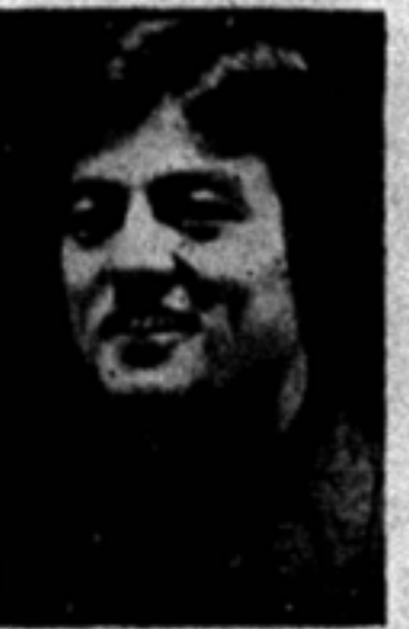

Other
#
ASG books its first show of the year
The Herald reported in the first issue of the year that ASG had booked its first show. The same freshman issue advertised a used book exchange scheduled in West Hall.
Associated Students · academic year

Elected ASG president by a 26-vote margin, reported 15 April 1977. Herald bylines call him 'Bob Moore.'
Moore was one of four candidates - with Tom Blair, Kirt Grubbs and Mark McChesney - who opened the 1977 Associated Student Government presidential race on April 1. Moore and Blair survived the primary into the general election; McChesney did not, and by April 12 his letter backing Moore ran in the Herald alongside endorsements for the rest of the ticket, as outgoing president Christy Vogt urged students to get involved. The Herald's April 8 issue had set up the contest alongside the treasurer's race between George Carlson and rivals.
Moore won on April 15, 1977, by 26 votes over Blair - one of the narrowest presidential margins in the record - in an issue that also carried the faculty asking for a say in hiring and Western fighting a beer licence for a local pizzeria.
That October, as president, Moore publicly questioned how freshman candidates in that fall's class elections were spending their campaign money. The comment drew enough pushback that the Herald ran an editorial the same week headlined 'Bob Moore's Comment Isn't Good Politics.'
The archive does not yet show what Moore's administration did over the winter and into the spring beyond the ordinary business of readying his succession - see the 1978 election events below. By September 1978, after his term had ended, the Herald reported that Moore had been found ineligible for another Associated Student Government job; the archive does not yet hold the article's account of why.
Sources for this account
The 14 things student government staged or ran for the campus this year, drawn from the chronology below. Every one of them also appears on the programmes page, which runs the whole sixty years together.
The Herald reported in the first issue of the year that ASG had booked its first show. The same freshman issue advertised a used book exchange scheduled in West Hall.
The Herald reported that the Associated Student Government was awaiting approval of changes to its constitution as the fall term opened. The story ran alongside a look at how ASG's concert booking process actually worked.
Waylon Jennings and Jessi Colter opened the concert year on 9 September 1977 before about 5,000 people. Jennings and his secretary had been arrested in Nashville on a charge of conspiring to possess cocaine and some feared the show would be cancelled, but he was permitted to keep the date; Colter opened with a thirty-minute set before the band Waylon took over.
attendance about 5,000
An ASG proposal said a shuttle bus was needed to relieve crowded parking lots. The Herald had editorialised a month earlier that a shuttle bus was the best answer to the parking problem.
President Bob Moore publicly questioned how freshman class candidates were spending their campaign money, in a story the Herald headlined "A$G?". The paper answered the same week with an editorial arguing that Moore's comment was not good politics. Moore wrote back disputing the editorial.
The Associated Student Government named David Bass its new vice president. The same issue carried Moore's letter disputing the Herald's editorial on candidate spending.
The Atlanta Rhythm Section cancelled its Homecoming concert, and the Charlie Daniels Band came to Western's rescue on Homecoming eve, Thursday 27 October 1977. Daniels was promoting 'Midnight Wind' and played 'Long-Haired Country Boy', 'The South's Gonna Do It Again' and 'Orange Blossom Special'; ARS rescheduled for February.
Celebrity Ball, a rock group from Atlanta, entertained at an ASG-sponsored dance in the Garrett Conference Ballroom on Homecoming night, after the 20-20 tie with Morehead before an estimated 19,750 fans. It was the fiftieth Homecoming since Henry Hardin Cherry conceived the tradition in 1927.
Only 2,916 came to see Dave Mason and Kenny Loggins in Diddle Arena on 8 November 1977, a concert that cost the university about $31,200. The Herald reported a loss of $13,200; both men were riding new gold albums, Mason took one encore and Loggins three, and the shortfall nearly eliminated the free spring concert.
lost $13,200; cost about $31,200; attendance 2,916
ASG and the Interhall Council backed a coed dorm and abolition of the door-ajar visitation rule. The vote followed weeks in which the two bodies weighed a dorm petition and the Herald urged ASG to represent students in the dorm protest.
The Herald reported that the book swap was off for the spring semester. The same issue carried ASG's plans for its spring activities and a bill to support a state landlord-tenant measure.
ASG signed Atlanta Rhythm Section and Brick for spring concerts. Ticket sales proved weak, and by late February the Herald was reporting on the organization's concert losses.
The Herald reported that few tickets had been sold for the ASG concert by the Atlanta Rhythm Section. The warning proved accurate a week later.
The Atlanta Rhythm Section finally appeared on 14 February 1978, bringing fellow Atlantans Brick, who opened with 'Dazz' and 'Dusic'. Most of the audience left before ARS took the stage; only 2,346 tickets were sold and the university lost about $12,000. United Black Students had announced in January that it would help arrange for Brick and LTD to appear, but LTD did not.
lost about $12,000; 2,346 tickets sold
The Herald reported that losses would not halt an ASG free concert, and that ASG had thrown in towels as a bonus for performers. An editorial declared that the cry for better concerts had finally been heard.
The Associated Student Government set spending limits for candidates ahead of the spring election that would choose Moore's successor.
The Herald reported that groups had been signed for the free ASG concert, with the Average White Band on the bill. ASG had said in February that its losses would not halt the free concert.
Grandpa Jones entertained a crowd at the fine arts center amphitheatre during an ASG-sponsored Bluegrass Festival in the spring of 1978, with the Pinnacle Boys and Lester Flatt and the Nashville Grass also on the programme. The Herald reported on 25 April that the bluegrass crowds were relaxed and casual.
Steve Thornton and Ed Johnson faced off for the Associated Student Government presidency, Thornton campaigning on his experience, while four other offices had no opponent on the ballot.
Students voted in the Associated Student Government elections with four offices uncontested. Candidate Steve Thornton told the Herald his experience was an important factor in the race.
Ed Johnson, having lost the presidential race, contested the Associated Student Government election result.
The free spring concert on 18 April 1978 put the Average White Band and the Ramsey Lewis Trio in Diddle Arena and drew about 3,300, ASG's last show of the year. The Scottish group charged $10,000 and the talent fee for the Ramsey Lewis Trio was $5,000; the Herald's reviewer wrote that the band made a concerted effort but the fans were few.
AWB fee $10,000; Ramsey Lewis Trio fee $5,000; attendance about 3,300
Losing candidate Ed Johnson contested the election result, and after a long debate the Associated Student Government Judicial Council denied his appeal. The ruling let Steve Thornton's win stand. While the case was pending the Herald had criticized the appeal system for a lack of objectivity.
After ASG lost more than $23,000 on major concerts across the year, dean of student affairs Charles Keown recommended to the Board of Regents that its entertainment budget be halved for 1978-79 and that a committee study whether the University Center Board should take over programming. Bob Moore argued at the 29 April meeting that students would have less involvement if the change were made, and the regents voted to let ASG keep its full $62,000 entertainment budget while directing President Downing to appoint the study committee.
more than $23,000 lost on major concerts; $62,000 entertainment budget retained for 1978-79
The Herald reported that ASG had stopped funding the Student Volunteer Bureau and would start a newsletter. The bureau, which placed students in community volunteer work and in elementary school tutoring, had been part of ASG since January 1975.
Every source cited above, once, with the number of entries that rest on it.
Preferred citation
“1977-78,” SGA 60: Student Government at Western Kentucky University, 1966–2026, revised 5 August 2026, y/1977-78.html
Where a name on this page differs from the plaque in the SGA Chambers, the difference is explained above and recorded on the corrections page.